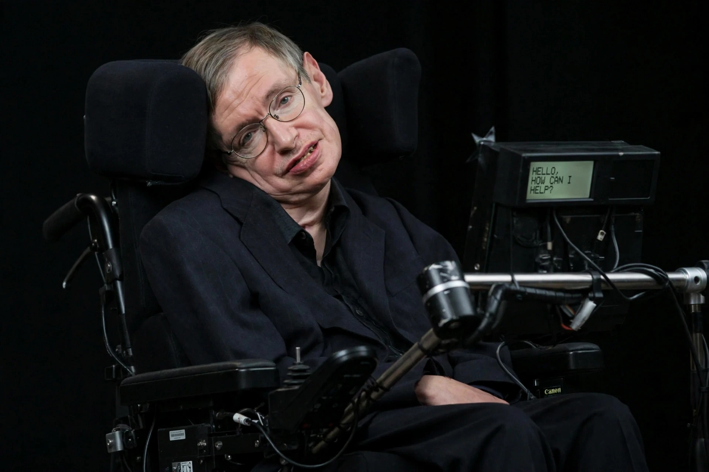

Stephen Hawking
| Born | 8 January 1942, Oxford, England |
|---|---|
| Died | 14 March 2018 (aged 76), Cambridge, England |
| Known for | Hawking radiation, singularity theorems, A Brief History of Time |
| Institutions | University of Cambridge |

[Image: Photograph of Stephen Hawking in his wheelchair with his speech-generating device]Stephen William Hawking (8 January 1942 – 14 March 2018) was an English theoretical physicist, cosmologist and author. He was the Lucasian Professor of Mathematics at the University of Cambridge from 1979 to 2009, and one of the most recognisable scientists of his era.
Hawking's scientific works included the gravitational singularity theorems (with Roger Penrose) and the prediction that black holes emit radiation, often called Hawking radiation. A lifelong motor neurone disease (ALS), diagnosed at 21, progressively paralysed him; he communicated through a cheek-operated speech synthesiser. His book A Brief History of Time (1988) sold more than ten million copies and made him a global cultural figure.
Research
Hawking's early work extended Roger Penrose's singularity theorem to the whole universe, showing (with Penrose, 1970) that General relativity implies a beginning — the Big Bang — under general conditions. In the 1970s he worked out the laws of black-hole mechanics (with James Bardeen and Brandon Carter) and in 1974 combined quantum theory with gravity to show that black holes should radiate thermally and slowly evaporate, a result that sharpened the black-hole information paradox that occupied him for decades.
With James Hartle he proposed the 'no-boundary' model of the universe's origin (1983). He lost famous public bets — conceding to John Preskill in 2004 that information is not destroyed in black holes — and his late work addressed the multiverse and the far future of cosmology.
Later life and legacy
Hawking became an emblem of intellectual triumph over disability and a prominent communicator on topics from artificial intelligence to space colonisation. He died in Cambridge on 14 March 2018 — Einstein's birthday and Pi Day — and his ashes were interred in Westminster Abbey between Newton and Darwin. The Hawking radiation prediction remains untested directly, and the question of how black holes store and release information continues to drive research in quantum gravity.